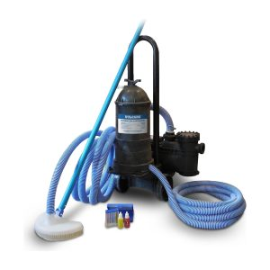

Caso curioso #2El verano es cuando más se usa la piscina, y también cuando más rápido se ensucia. Estos cinco hábitos te van a ahorrar tiempo y productos químicos durante toda la temporada.
Un filtro saturado deja de hacer su trabajo y el agua empieza a verse turbia.
Con más calor y más bañistas, el cloro se consume más rápido. Revisa dos veces por semana.
Un cobertor reduce la entrada de hojas y polvo, y baja el consumo de químicos.
La suciedad que se acumula en el fondo es la principal causa de agua verde.
Un pH fuera de rango irrita la piel y hace que el cloro pierda efectividad.
Encuentra todo lo que necesitas para tu mantenimiento en nuestra sección de Químicos.